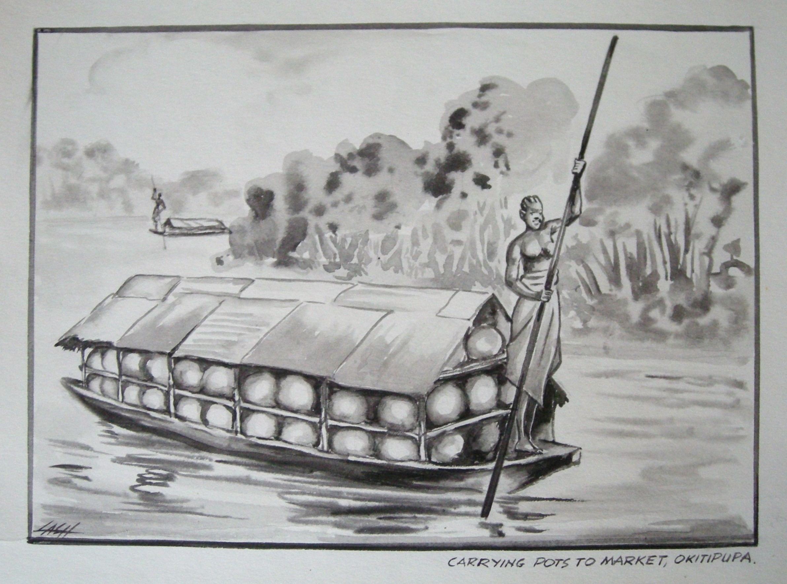

Akinola Lasekan
1916–1974
Artist Biography
Akinola Lasekan was born Samuel Akinola Oladetimi at Ipele near Owo, Ondo State, a son of Chief Oyekanmi Oladetimi Lasekan. A student of Aina Onabolu, one of the most highly regarded figures of Nigerian Modern art, Lasekan began his career under the influence of his teacher’s naturalist style and preference for portraiture. Although Lasekan continued to paint portraits he would come to develop his own distinct style which was heavily influenced by Yoruba culture. Lasekan initially earned a living as a textile designer before turning to book illustration. Commercial success enabled him to establish an art studio and he became an art teacher in 1941, when he changed his name to Akinola Lasekan. All the while, he studied commercial art through correspondence studies with the Hammersmith school of Art in London. In 1962, he became a fellow of the royal society of Arts London, in the UK.

Carrying pots to market, Okitipupa